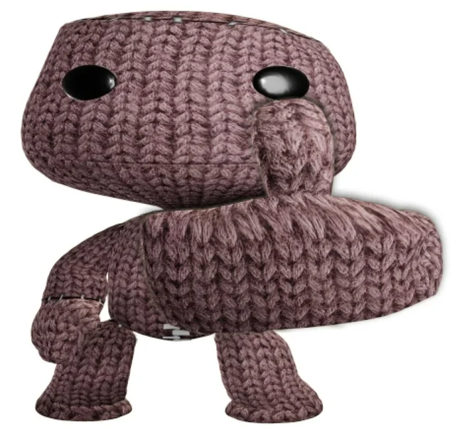
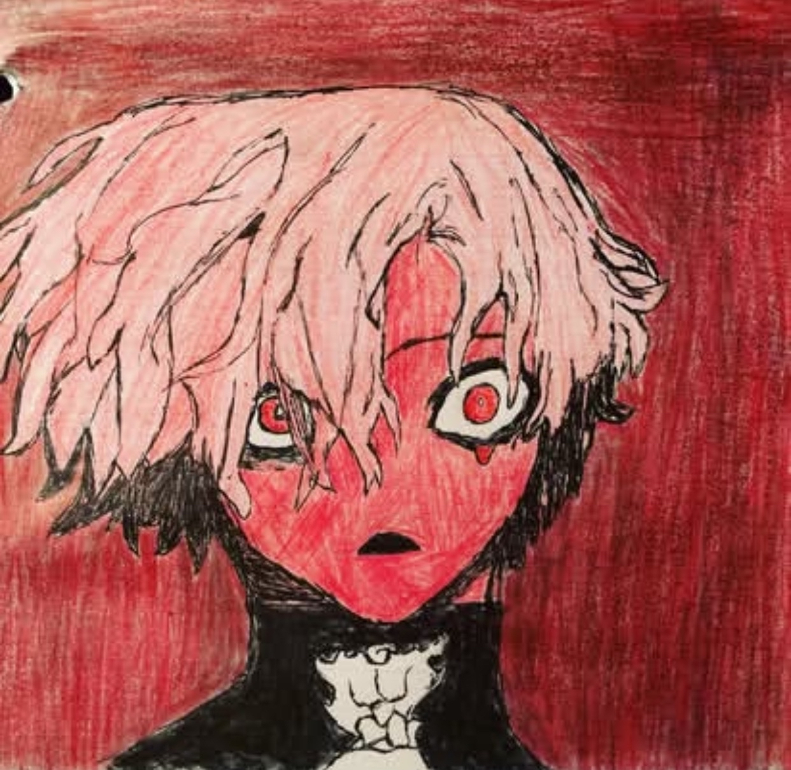
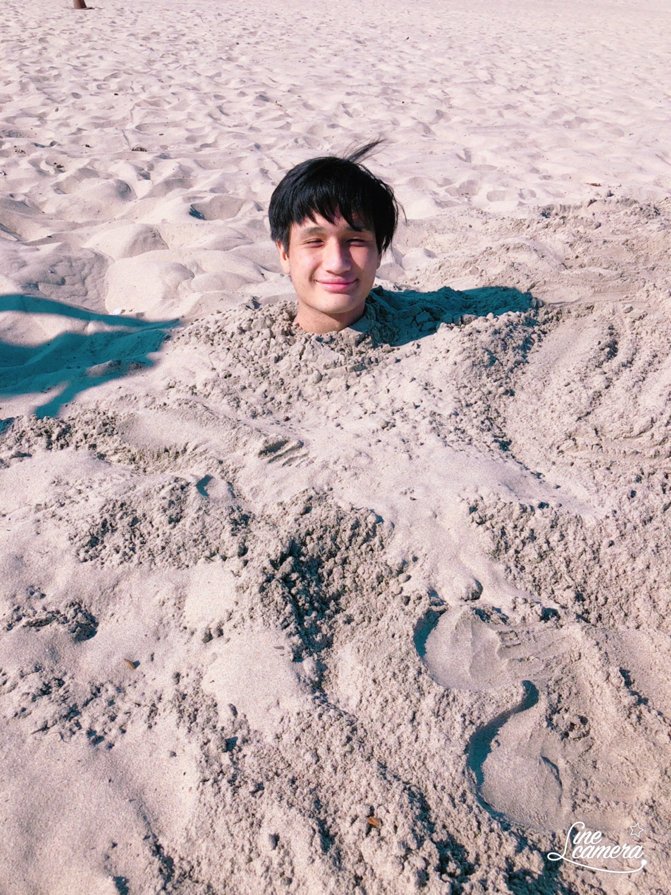

Hello! This bio page is about me, Skylar!
Going through high school I was always a creative individual, deeply enjoying drawing as a hobby along with poetry but I always also loved math. With english being my favorite subject alongside math as a close second, I had to choose what I wanted from my career: a logic centric career or a creative centric career. As I grew up and experienced more, I've come to finally realize that I can indulge in a career that includes both my values in logic and creative expression: Computer Science!
I'm currently taking WEBD 168 because I wanted to complete credits in a class that involved coding or computer science. I'm very new to coding so jumping right into html and css is a bit confusing yet fun to learn. I really am hoping to extend my coding language information and skills through this class, and it seems i definitley will be adding to my coding languages! My experiences include java programming, graphic creation with photoshop, and adobe illustrator.


I've always grown up playing video games during the weekends, it was my escape when life would become rough for my family. My connections, adventures, and memories all hold great sentimental value to me because they've helped shape my whimsical, creative, but also darker view of the world. Acoustic guitar is a hobby I've picked up last year and has become one of my favorite ways to vent my emotions, this alongside drawing art. I know how to roller skate, roller blade, ice skate, and skateboard, all greatly fun which has led me to become interested in wanting to snowboard or skii!


